This document performs causal inference analysis using inverse probability weighting (IPW) methods on an observational dataset. The analysis adjusts for confounding by weighting observations based on their propensity to receive treatment, which helps to create a pseudo-randomized scenario from observational data.
# Load the cleaned and imputed dataset
df <- read.csv("data/imputed_case_study_data.csv")
# Display the structure of the dataset
str(df)## 'data.frame': 5000 obs. of 15 variables:
## $ age : num 65.8 40.7 52.7 56.2 53.3 ...
## $ sex : int 1 0 0 1 0 0 1 0 1 1 ...
## $ race : chr "other" "black" "white" "white" ...
## $ region : chr "S" "S" "S" "S" ...
## $ cirrhosis : int 0 0 0 0 1 1 0 1 0 0 ...
## $ hiv : int 0 0 0 0 0 0 0 0 0 0 ...
## $ ment_ill : int 0 0 0 1 0 0 0 0 0 1 ...
## $ ckd : num 0 0 0 0 0 0 0 0 0 1 ...
## $ diabetes : int 0 0 0 1 0 0 0 0 0 0 ...
## $ hypertension: int 1 1 0 0 0 0 0 0 1 0 ...
## $ baseline_gfr: num 101.2 101.8 79.5 93.8 87.8 ...
## $ bmi : num 33.6 28.9 27.6 27.5 28 ...
## $ treatment : int 1 1 1 1 1 1 1 1 1 1 ...
## $ time : num 31.8 13.9 20.5 40 11.7 ...
## $ event : int 0 0 1 1 1 1 1 1 1 1 ...## age sex race region cirrhosis hiv ment_ill ckd diabetes hypertension
## 1 65.82246 1 other S 0 0 0 0 0 1
## 2 40.65892 0 black S 0 0 0 0 0 1
## 3 52.72067 0 white S 0 0 0 0 0 0
## 4 56.22721 1 white S 0 0 1 0 1 0
## 5 53.25549 0 white S 1 0 0 0 0 0
## 6 46.62038 0 white MW 1 0 0 0 0 0
## baseline_gfr bmi treatment time event
## 1 101.21493 33.60705 1 31.789024 0
## 2 101.80617 28.85789 1 13.937580 0
## 3 79.50943 27.62814 1 20.483492 1
## 4 93.78124 27.45538 1 39.953434 1
## 5 87.76658 27.98496 1 11.710734 1
## 6 80.90292 25.39898 1 4.488705 1## age baseline_gfr bmi treatment
## Min. :18.00 Min. : 39.92 Min. : 9.416 Min. :0.0000
## 1st Qu.:39.09 1st Qu.: 80.35 1st Qu.:24.678 1st Qu.:1.0000
## Median :47.85 Median : 89.88 Median :28.091 Median :1.0000
## Mean :47.87 Mean : 90.02 Mean :28.038 Mean :0.9388
## 3rd Qu.:56.58 3rd Qu.: 99.81 3rd Qu.:31.474 3rd Qu.:1.0000
## Max. :94.60 Max. :145.18 Max. :46.985 Max. :1.0000
## event
## Min. :0.000
## 1st Qu.:1.000
## Median :1.000
## Mean :0.759
## 3rd Qu.:1.000
## Max. :1.000## age sex race region cirrhosis hiv
## 0 0 0 0 0 0
## ment_ill ckd diabetes hypertension baseline_gfr bmi
## 0 0 0 0 0 0
## treatment time event
## 0 0 0Before diving into the causal analysis, let’s explore the dataset to understand the distribution of key variables and their relationships with treatment assignment.
##
## 0 1
## 306 4694##
## 0 1
## 0.0612 0.9388##
## 0 1
## 0 72 234
## 1 1133 3561##
## 0 1
## 0 0.2352941 0.7647059
## 1 0.2413720 0.7586280# Create balance table before any weighting
covariates <- c("age", "baseline_gfr", "bmi", "sex", "diabetes", "hypertension")
baseline_table <- CreateTableOne(vars = covariates, strata = "treatment", data = df, test = TRUE)
print(baseline_table, smd = TRUE)## Stratified by treatment
## 0 1 p test SMD
## n 306 4694
## age (mean (SD)) 45.12 (13.10) 48.04 (12.90) <0.001 0.225
## baseline_gfr (mean (SD)) 86.47 (14.67) 90.25 (14.73) <0.001 0.257
## bmi (mean (SD)) 27.46 (4.97) 28.08 (5.06) 0.041 0.122
## sex (mean (SD)) 0.48 (0.50) 0.58 (0.49) <0.001 0.209
## diabetes (mean (SD)) 0.14 (0.35) 0.22 (0.42) 0.001 0.210
## hypertension (mean (SD)) 0.39 (0.49) 0.47 (0.50) 0.006 0.165# Visualize the distribution of key continuous variables by treatment
# Age distribution
ggplot(df, aes(x = age, fill = factor(treatment))) +
geom_density(alpha = 0.5) +
labs(title = "Age Distribution by Treatment Group",
x = "Age", y = "Density", fill = "Treatment") +
theme_minimal()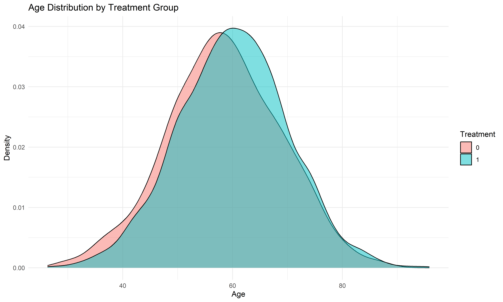
# Baseline GFR distribution
ggplot(df, aes(x = baseline_gfr, fill = factor(treatment))) +
geom_density(alpha = 0.5) +
labs(title = "Baseline GFR Distribution by Treatment Group",
x = "Baseline GFR", y = "Density", fill = "Treatment") +
theme_minimal()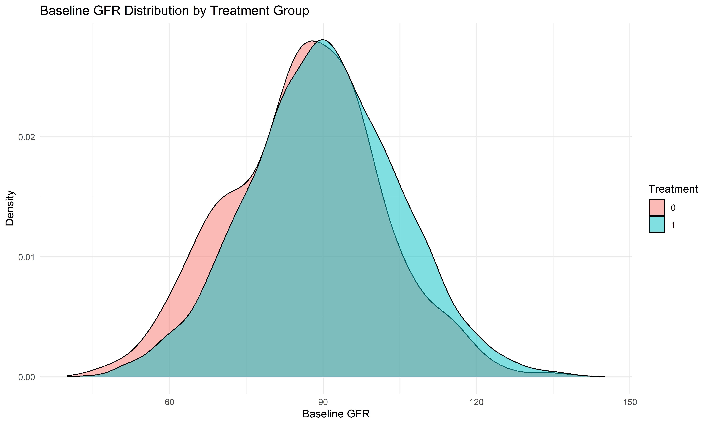
# BMI distribution
ggplot(df, aes(x = bmi, fill = factor(treatment))) +
geom_density(alpha = 0.5) +
labs(title = "BMI Distribution by Treatment Group",
x = "BMI", y = "Density", fill = "Treatment") +
theme_minimal()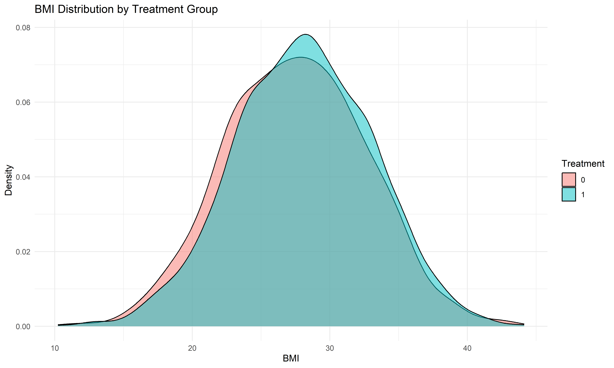
# Categorical variables
# Sex distribution
ggplot(df, aes(x = factor(sex), fill = factor(treatment))) +
geom_bar(position = "dodge") +
labs(title = "Sex Distribution by Treatment Group",
x = "Sex (1 = Male, 0 = Female)", y = "Count", fill = "Treatment") +
theme_minimal()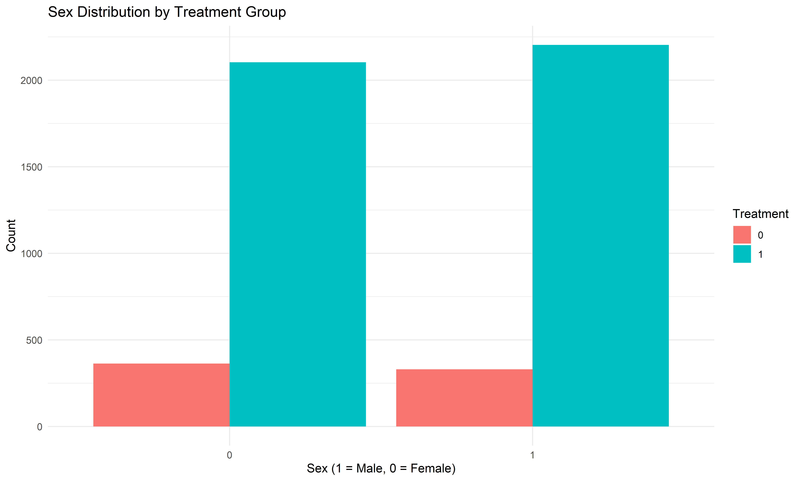
# Diabetes distribution
ggplot(df, aes(x = factor(diabetes), fill = factor(treatment))) +
geom_bar(position = "dodge") +
labs(title = "Diabetes Distribution by Treatment Group",
x = "Diabetes (1 = Yes, 0 = No)", y = "Count", fill = "Treatment") +
theme_minimal()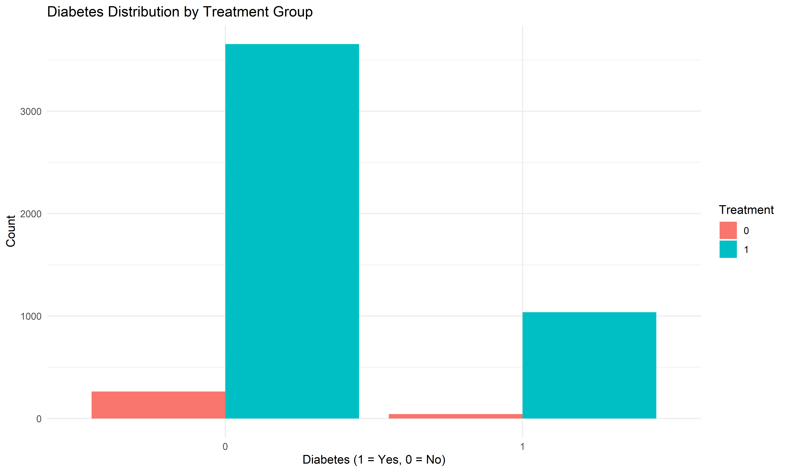
# Hypertension distribution
ggplot(df, aes(x = factor(hypertension), fill = factor(treatment))) +
geom_bar(position = "dodge") +
labs(title = "Hypertension Distribution by Treatment Group",
x = "Hypertension (1 = Yes, 0 = No)", y = "Count", fill = "Treatment") +
theme_minimal()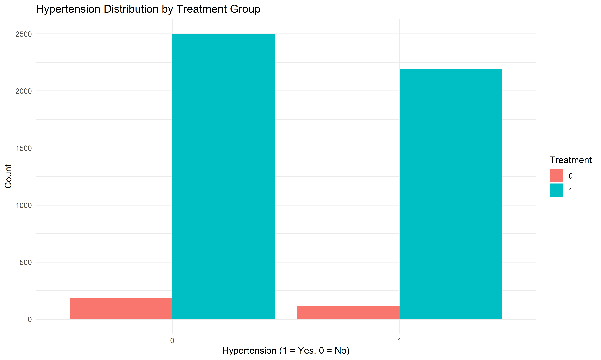
We’ll use logistic regression to model the probability of receiving the treatment given the observed covariates.
# Model treatment as a function of key covariates using logistic regression
ps_model <- glm(treatment ~ age + baseline_gfr + bmi + sex + diabetes + hypertension,
data = df, family = binomial)
# Summary of the propensity score model
summary(ps_model)##
## Call:
## glm(formula = treatment ~ age + baseline_gfr + bmi + sex + diabetes +
## hypertension, family = binomial, data = df)
##
## Coefficients:
## Estimate Std. Error z value Pr(>|z|)
## (Intercept) -0.927484 0.543052 -1.708 0.087653 .
## age 0.017911 0.004643 3.858 0.000114 ***
## baseline_gfr 0.018946 0.004087 4.635 3.56e-06 ***
## bmi 0.023397 0.011747 1.992 0.046399 *
## sex 0.474073 0.119449 3.969 7.22e-05 ***
## diabetes 0.563393 0.169070 3.332 0.000861 ***
## hypertension 0.346551 0.122029 2.840 0.004513 **
## ---
## Signif. codes: 0 '***' 0.001 '**' 0.01 '*' 0.05 '.' 0.1 ' ' 1
##
## (Dispersion parameter for binomial family taken to be 1)
##
## Null deviance: 2302.6 on 4999 degrees of freedom
## Residual deviance: 2229.2 on 4993 degrees of freedom
## AIC: 2243.2
##
## Number of Fisher Scoring iterations: 6# Obtain the predicted propensity scores (P(A=1|X))
df$pscore <- predict(ps_model, type = "response")
# Visualize propensity score distribution by treatment group
ggplot(df, aes(x = pscore, fill = factor(treatment))) +
geom_density(alpha = 0.5) +
labs(title = "Propensity Score Distribution by Treatment Group",
x = "Propensity Score", y = "Density", fill = "Treatment") +
theme_minimal()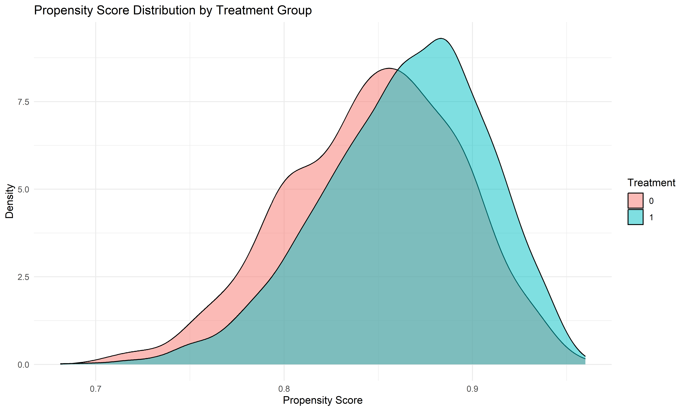
# Check for positivity (common support)
# Create bins of propensity scores
df$ps_bin <- cut(df$pscore, breaks = seq(0, 1, 0.1))
counts <- table(df$ps_bin, df$treatment)
prop_table <- prop.table(counts, margin = 1)
print(counts)##
## 0 1
## (0,0.1] 0 0
## (0.1,0.2] 0 0
## (0.2,0.3] 0 0
## (0.3,0.4] 0 0
## (0.4,0.5] 0 0
## (0.5,0.6] 0 0
## (0.6,0.7] 0 0
## (0.7,0.8] 1 3
## (0.8,0.9] 72 464
## (0.9,1] 233 4227##
## 0 1
## (0,0.1]
## (0.1,0.2]
## (0.2,0.3]
## (0.3,0.4]
## (0.4,0.5]
## (0.5,0.6]
## (0.6,0.7]
## (0.7,0.8] 0.25000000 0.75000000
## (0.8,0.9] 0.13432836 0.86567164
## (0.9,1] 0.05224215 0.94775785# Visualize overlap
ggplot(df, aes(x = ps_bin, fill = factor(treatment))) +
geom_bar(position = "stack") +
labs(title = "Treatment Assignment by Propensity Score Bins",
x = "Propensity Score Bins", y = "Count", fill = "Treatment") +
theme_minimal() +
theme(axis.text.x = element_text(angle = 45, hjust = 1))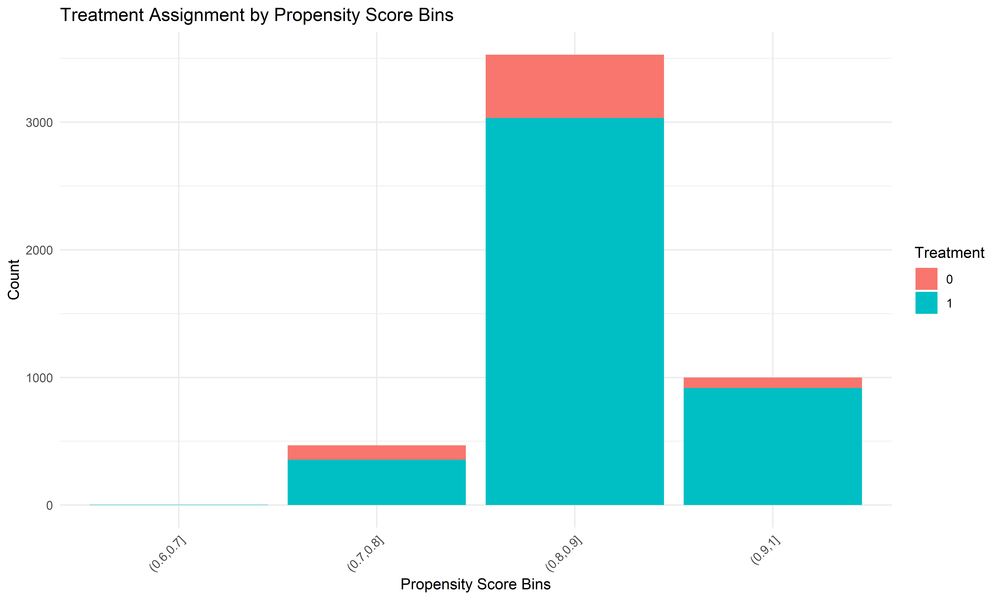
Stabilized weights help reduce the variance of the estimator compared to unstabilized weights.
# Compute the marginal probability of treatment assignment
pA1 <- mean(df$treatment == 1)
pA0 <- 1 - pA1
# Calculate stabilized weights:
# For treated: weight = P(A=1) / pscore
# For controls: weight = P(A=0) / (1 - pscore)
df <- df %>%
mutate(stab_weight = ifelse(treatment == 1, pA1 / pscore, pA0 / (1 - pscore)))
# Examine summary of weights
summary(df$stab_weight)## Min. 1st Qu. Median Mean 3rd Qu. Max.
## 0.2888 0.9754 0.9927 1.0003 1.0160 4.1935# Assess the distribution of weights
ggplot(df, aes(x = stab_weight)) +
geom_histogram(binwidth = 0.5, fill = "blue", color = "black", alpha = 0.7) +
labs(title = "Distribution of Stabilized Weights",
x = "Stabilized Weight", y = "Frequency") +
theme_minimal()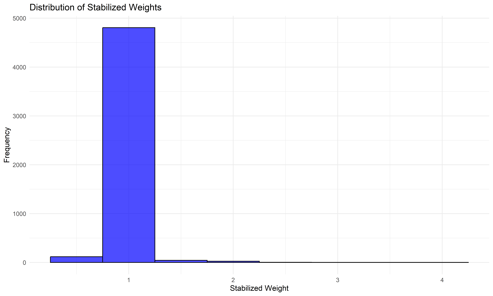
# Check for extreme weights
df %>%
summarize(
Mean_Weight = mean(stab_weight),
SD_Weight = sd(stab_weight),
Median_Weight = median(stab_weight),
Min_Weight = min(stab_weight),
Max_Weight = max(stab_weight),
Q1 = quantile(stab_weight, 0.25),
Q3 = quantile(stab_weight, 0.75)
)## Mean_Weight SD_Weight Median_Weight Min_Weight Max_Weight Q1 Q3
## 1 1.000302 0.1363262 0.9927346 0.2887519 4.193528 0.9754134 1.016016# Visualize weights by treatment group
ggplot(df, aes(x = stab_weight, fill = factor(treatment))) +
geom_density(alpha = 0.5) +
labs(title = "Distribution of Stabilized Weights by Treatment Group",
x = "Stabilized Weight", y = "Density", fill = "Treatment") +
theme_minimal()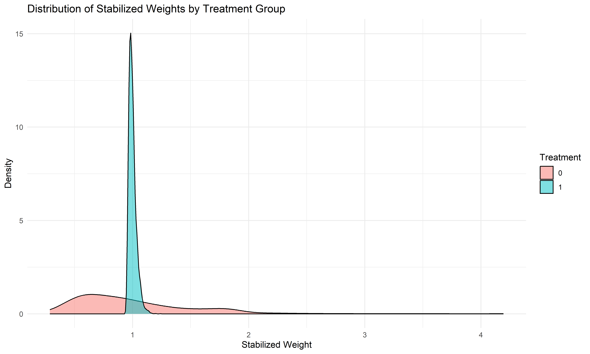
# Create a survey design object using the stabilized weights
design <- svydesign(ids = ~1, data = df, weights = ~stab_weight)
# Compare covariate balance before weighting using tableone
covariates <- c("age", "baseline_gfr", "bmi", "sex", "diabetes", "hypertension")
table1_before <- CreateTableOne(vars = covariates, strata = "treatment", data = df, test = FALSE)
print(table1_before, smd = TRUE)## Stratified by treatment
## 0 1 SMD
## n 306 4694
## age (mean (SD)) 45.12 (13.10) 48.04 (12.90) 0.225
## baseline_gfr (mean (SD)) 86.47 (14.67) 90.25 (14.73) 0.257
## bmi (mean (SD)) 27.46 (4.97) 28.08 (5.06) 0.122
## sex (mean (SD)) 0.48 (0.50) 0.58 (0.49) 0.209
## diabetes (mean (SD)) 0.14 (0.35) 0.22 (0.42) 0.210
## hypertension (mean (SD)) 0.39 (0.49) 0.47 (0.50) 0.165# Assess balance after weighting using cobalt
bal_tab <- bal.tab(treatment ~ age + baseline_gfr + bmi + sex + diabetes + hypertension,
data = df, weights = df$stab_weight, estimand = "ATE")
print(bal_tab)## Balance Measures
## Type Diff.Adj
## age Contin. -0.0204
## baseline_gfr Contin. 0.0157
## bmi Contin. -0.0166
## sex Binary 0.0068
## diabetes Binary -0.0076
## hypertension Binary -0.0193
##
## Effective sample sizes
## Control Treated
## Unadjusted 306. 4694.
## Adjusted 238.24 4689.05# Visualize balance with a love plot
love.plot(bal_tab, threshold = 0.1, var.order = "unadjusted",
abs = TRUE, line = TRUE, colors = c("red", "blue"),
title = "Covariate Balance Before and After Weighting")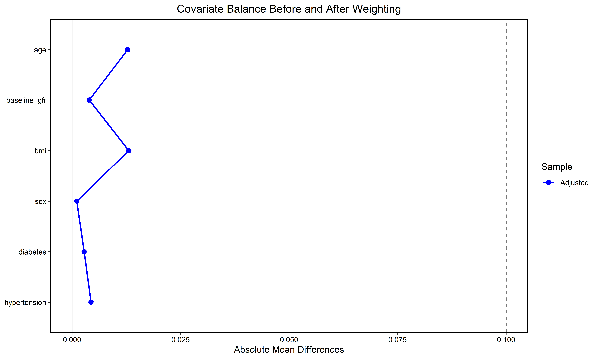
# Create weighted means for each variable
weighted_means <- svyby(~ age + baseline_gfr + bmi + sex + diabetes + hypertension,
~treatment, design, svymean)
print(weighted_means)## treatment age baseline_gfr bmi sex diabetes hypertension
## 0 0 48.13203 89.78668 28.12194 0.5709998 0.2237965 0.4811254
## 1 1 47.86623 90.01679 28.03891 0.5777881 0.2162147 0.4618378
## se.age se.baseline_gfr se.bmi se.sex se.diabetes se.hypertension
## 0 0.8303570 0.9127371 0.28038965 0.031276605 0.031716210 0.032635127
## 1 0.1888195 0.2157496 0.07397067 0.007228598 0.005962203 0.007275533# Calculate standardized mean differences after weighting
bal.tab(treatment ~ age + baseline_gfr + bmi + sex + diabetes + hypertension,
data = df, weights = df$stab_weight, estimand = "ATE",
method = "weighting", disp = c("means", "sds", "sdiffs"))## Balance Measures
## Type M.0.Adj SD.0.Adj M.1.Adj SD.1.Adj Diff.Adj
## age Contin. 48.1320 13.0176 47.8662 12.9139 -0.0204
## baseline_gfr Contin. 89.7867 14.3163 90.0168 14.7513 0.0157
## bmi Contin. 28.1219 4.7013 28.0389 5.0625 -0.0166
## sex Binary 0.5710 . 0.5778 . 0.0068
## diabetes Binary 0.2238 . 0.2162 . -0.0076
## hypertension Binary 0.4811 . 0.4618 . -0.0193
##
## Effective sample sizes
## Control Treated
## Unadjusted 306. 4694.
## Adjusted 238.24 4689.05# Balance plot for each covariate
bal.plot(treatment ~ age + baseline_gfr + bmi + sex + diabetes + hypertension,
data = df, weights = df$stab_weight, var.name = "age")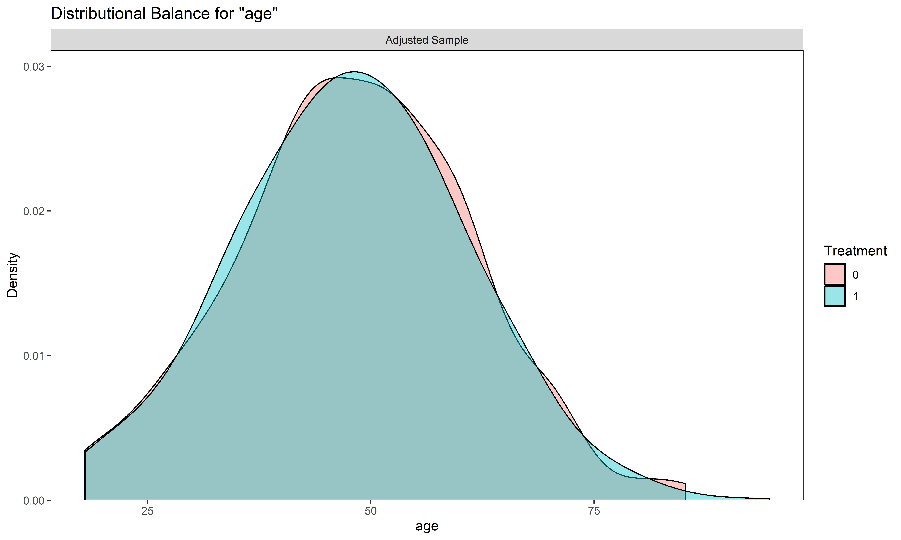
bal.plot(treatment ~ age + baseline_gfr + bmi + sex + diabetes + hypertension,
data = df, weights = df$stab_weight, var.name = "baseline_gfr")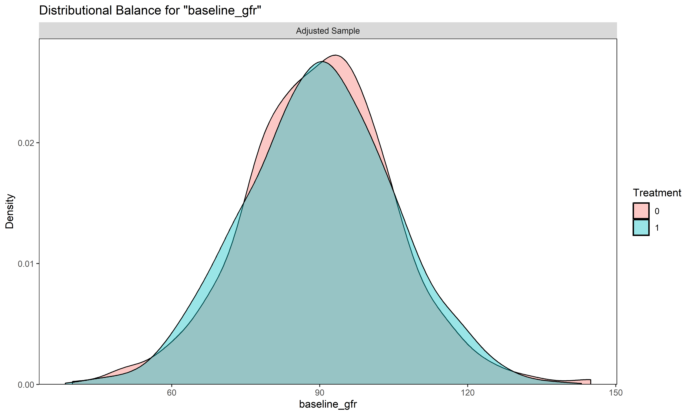
bal.plot(treatment ~ age + baseline_gfr + bmi + sex + diabetes + hypertension,
data = df, weights = df$stab_weight, var.name = "bmi")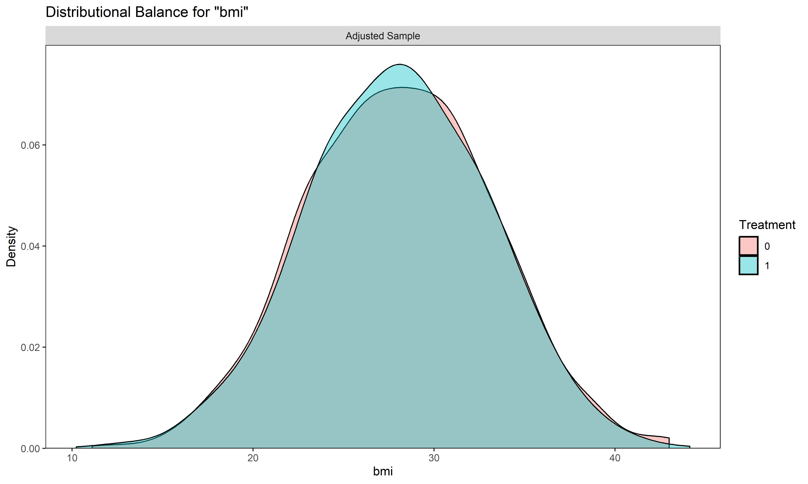
# Use the survey design to fit a weighted logistic regression model for the outcome
weighted_model <- svyglm(event ~ treatment, design = design, family = binomial)
summary(weighted_model)##
## Call:
## svyglm(formula = event ~ treatment, design = design, family = binomial)
##
## Survey design:
## svydesign(ids = ~1, data = df, weights = ~stab_weight)
##
## Coefficients:
## Estimate Std. Error t value Pr(>|t|)
## (Intercept) 1.135983 0.154466 7.354 2.23e-13 ***
## treatment 0.009353 0.158192 0.059 0.953
## ---
## Signif. codes: 0 '***' 0.001 '**' 0.01 '*' 0.05 '.' 0.1 ' ' 1
##
## (Dispersion parameter for binomial family taken to be 1.0002)
##
## Number of Fisher Scoring iterations: 4# Extract coefficients and calculate odds ratio
coef_summary <- summary(weighted_model)
odds_ratio <- exp(coef(weighted_model)["treatment"])
or_ci <- exp(confint(weighted_model)["treatment", ])
# Display odds ratio and confidence interval
or_result <- data.frame(
Odds_Ratio = odds_ratio,
Lower_CI = or_ci[1],
Upper_CI = or_ci[2]
)
print(or_result)## Odds_Ratio Lower_CI Upper_CI
## treatment 1.009397 0.7402457 1.37641# Optional: Calculate risk differences and risk ratios
# Create a function to compute predicted probabilities
get_predicted_probs <- function(model, newdata) {
pred <- predict(model, newdata = newdata, type = "response")
return(mean(pred))
}
# Calculate risk for treated
risk_treated <- get_predicted_probs(weighted_model,
data.frame(treatment = rep(1, nrow(df))))
# Calculate risk for untreated
risk_untreated <- get_predicted_probs(weighted_model,
data.frame(treatment = rep(0, nrow(df))))
# Calculate risk difference and risk ratio
risk_difference <- risk_treated - risk_untreated
risk_ratio <- risk_treated / risk_untreated
results <- data.frame(
Risk_Treated = risk_treated,
Risk_Untreated = risk_untreated,
Risk_Difference = risk_difference,
Risk_Ratio = risk_ratio
)
print(results)## Risk_Treated Risk_Untreated Risk_Difference Risk_Ratio
## 1 0.758658 0.7569414 0.001716632 1.002268# Truncate weights at the 1st and 99th percentiles
lower_bound=0.01
upper_bound=0.99
df <- df %>%
mutate(trunc_weight = pmin(pmax(stab_weight, lower_bound), upper_bound))
# Summary of truncated weights
summary(df$trunc_weight)## Min. 1st Qu. Median Mean 3rd Qu. Max.
## 0.2888 0.9754 0.9900 0.9717 0.9900 0.9900# Compare original and truncated weights
ggplot(df) +
geom_point(aes(x = stab_weight, y = trunc_weight, color = factor(treatment))) +
geom_abline(intercept = 0, slope = 1, linetype = "dashed") +
labs(title = "Original vs. Truncated Weights",
x = "Original Stabilized Weights",
y = "Truncated Weights",
color = "Treatment") +
theme_minimal()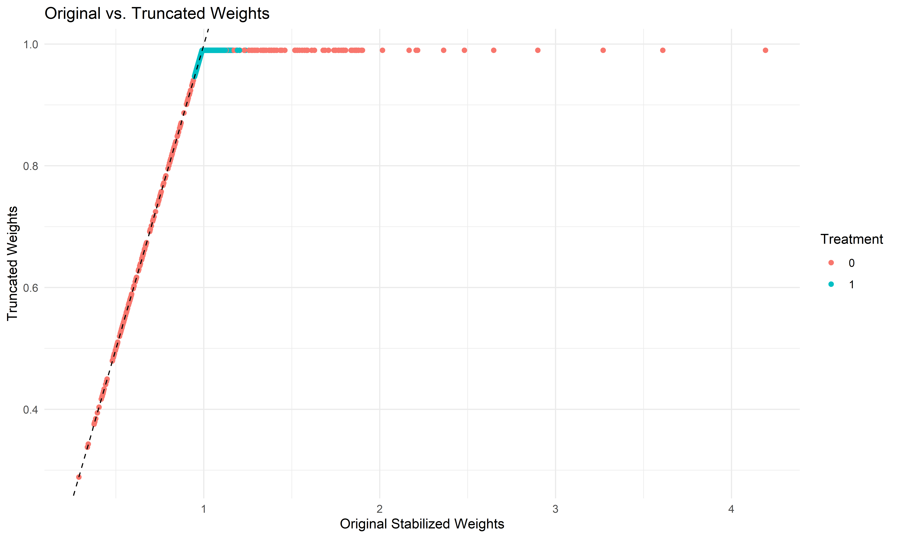
# Refit the model with truncated weights
design_trunc <- svydesign(ids = ~1, data = df, weights = ~trunc_weight)
weighted_model_trunc <- svyglm(event ~ treatment, design = design_trunc, family = binomial)
summary(weighted_model_trunc)##
## Call:
## svyglm(formula = event ~ treatment, design = design_trunc, family = binomial)
##
## Survey design:
## svydesign(ids = ~1, data = df, weights = ~trunc_weight)
##
## Coefficients:
## Estimate Std. Error t value Pr(>|t|)
## (Intercept) 1.17448 0.13896 8.452 <2e-16 ***
## treatment -0.02948 0.14309 -0.206 0.837
## ---
## Signif. codes: 0 '***' 0.001 '**' 0.01 '*' 0.05 '.' 0.1 ' ' 1
##
## (Dispersion parameter for binomial family taken to be 1.0002)
##
## Number of Fisher Scoring iterations: 4# Compare the results of original and truncated weights models
original_coef <- coef(weighted_model)["treatment"]
original_ci <- confint(weighted_model)["treatment", ]
original_se <- summary(weighted_model)$coefficients["treatment", "Std. Error"]
trunc_coef <- coef(weighted_model_trunc)["treatment"]
trunc_ci <- confint(weighted_model_trunc)["treatment", ]
trunc_se <- summary(weighted_model_trunc)$coefficients["treatment", "Std. Error"]
comparison <- data.frame(
Model = c("Original", "Truncated"),
Coefficient = c(original_coef, trunc_coef),
SE = c(original_se, trunc_se),
Lower_CI = c(original_ci[1], trunc_ci[1]),
Upper_CI = c(original_ci[2], trunc_ci[2]),
OR = c(exp(original_coef), exp(trunc_coef)),
OR_Lower_CI = c(exp(original_ci[1]), exp(trunc_ci[1])),
OR_Upper_CI = c(exp(original_ci[2]), exp(trunc_ci[2]))
)
print(comparison)## Model Coefficient SE Lower_CI Upper_CI OR OR_Lower_CI
## 1 Original 0.009352968 0.1581922 -0.3007731 0.3194790 1.0093968 0.7402457
## 2 Truncated -0.029476037 0.1430901 -0.3099954 0.2510434 0.9709541 0.7334503
## OR_Upper_CI
## 1 1.376410
## 2 1.285366As seen in the WIHS cohort analysis, SMR weights can be used as an alternative weighting approach.
# Calculate SMR weights (weighting to the overall population)
# For treated: weight = 1
# For controls: weight = pscore / (1 - pscore)
df <- df %>%
mutate(smr_weight = ifelse(treatment == 1, 1, pscore / (1 - pscore)))
# Examine summary of SMR weights
summary(df$smr_weight)## Min. 1st Qu. Median Mean 3rd Qu. Max.
## 1.000 1.000 1.000 1.883 1.000 67.522# Create a survey design object using the SMR weights
design_smr <- svydesign(ids = ~1, data = df, weights = ~smr_weight)
# Fit the weighted outcome model using SMR weights
weighted_model_smr <- svyglm(event ~ treatment, design = design_smr, family = binomial)
summary(weighted_model_smr)##
## Call:
## svyglm(formula = event ~ treatment, design = design_smr, family = binomial)
##
## Survey design:
## svydesign(ids = ~1, data = df, weights = ~smr_weight)
##
## Coefficients:
## Estimate Std. Error t value Pr(>|t|)
## (Intercept) 1.13325 0.15685 7.225 5.77e-13 ***
## treatment 0.01192 0.16052 0.074 0.941
## ---
## Signif. codes: 0 '***' 0.001 '**' 0.01 '*' 0.05 '.' 0.1 ' ' 1
##
## (Dispersion parameter for binomial family taken to be 1.0002)
##
## Number of Fisher Scoring iterations: 5# Add SMR results to the comparison table
smr_coef <- coef(weighted_model_smr)["treatment"]
smr_ci <- confint(weighted_model_smr)["treatment", ]
smr_se <- summary(weighted_model_smr)$coefficients["treatment", "Std. Error"]
comparison_extended <- rbind(comparison,
data.frame(
Model = "SMR",
Coefficient = smr_coef,
SE = smr_se,
Lower_CI = smr_ci[1],
Upper_CI = smr_ci[2],
OR = exp(smr_coef),
OR_Lower_CI = exp(smr_ci[1]),
OR_Upper_CI = exp(smr_ci[2])
))
print(comparison_extended)## Model Coefficient SE Lower_CI Upper_CI OR
## 1 Original 0.009352968 0.1581922 -0.3007731 0.3194790 1.0093968
## 2 Truncated -0.029476037 0.1430901 -0.3099954 0.2510434 0.9709541
## treatment SMR 0.011923466 0.1605186 -0.3027635 0.3266104 1.0119948
## OR_Lower_CI OR_Upper_CI
## 1 0.7402457 1.376410
## 2 0.7334503 1.285366
## treatment 0.7387738 1.386261Following the approach in the causalRisk examples, we can implement an AIPW estimator that combines IPW with an outcome model.
# This is a simplified version of AIPW
# First, fit outcome models for each treatment group
outcome_model_treated <- glm(event ~ age + baseline_gfr + bmi + sex + diabetes + hypertension,
data = subset(df, treatment == 1), family = binomial)
outcome_model_control <- glm(event ~ age + baseline_gfr + bmi + sex + diabetes + hypertension,
data = subset(df, treatment == 0), family = binomial)
# Predict outcomes for all individuals under both treatment scenarios
df$y1_pred %>%
mutate(
aipw_y1 = ifelse(treatment == 1,
event + (stab_weight * (event - y1_pred)),
y1_pred),
aipw_y0 = ifelse(treatment == 0,
event + (stab_weight * (event - y0_pred)),
y0_pred)
)
# Calculate AIPW treatment effect
aipw_risk_treated <- mean(df$aipw_y1)
aipw_risk_untreated <- mean(df$aipw_y0)
aipw_risk_diff <- aipw_risk_treated - aipw_risk_untreated
aipw_risk_ratio <- aipw_risk_treated / aipw_risk_untreated
aipw_results <- data.frame(
Risk_Treated = aipw_risk_treated,
Risk_Untreated = aipw_risk_untreated,
Risk_Difference = aipw_risk_diff,
Risk_Ratio = aipw_risk_ratio
)
print(aipw_results)
# Compare with IPW results
comparison_methods <- data.frame(
Method = c("IPW", "AIPW"),
Risk_Treated = c(risk_treated, aipw_risk_treated),
Risk_Untreated = c(risk_untreated, aipw_risk_untreated),
Risk_Difference = c(risk_difference, aipw_risk_diff),
Risk_Ratio = c(risk_ratio, aipw_risk_ratio)
)
print(comparison_methods)Based on the WIHS cohort analysis, we can implement competing risks analysis. In our context, we’ll assume that death or loss to follow-up could be competing risks with our primary event.
# Create an example competing risk scenario
# Let's assume we have a variable called "competing_event" that represents death or loss to follow-up
# For demonstration purposes, we'll create it
set.seed(123)
df$competing_event <- rbinom(nrow(df), 1, 0.1) # 10% chance of a competing event
# For subjects with both main event and competing event, we'll prioritize the one that came first
# We'll assume competing events happened first for a random subset
overlap_indices <- which(df$event == 1 & df$competing_event == 1)
first_competing <- sample(overlap_indices, size = floor(length(overlap_indices) / 2))
df$event[first_competing] <- 0
# Create a composite event indicator (1 for primary event, 2 for competing event, 0 for no event)
df$composite_event <- ifelse(df$event == 1, 1, ifelse(df$competing_event == 1, 2, 0))
table(df$composite_event)
# Use multinomial regression for the competing risks analysis
library(nnet)
competing_model %
group_by(treatment) %>%
summarize(
Primary_Event_Rate = mean(event),
Competing_Event_Rate = mean(competing_event),
Pred_Primary_Rate = mean(prob_event),
Pred_Competing_Rate = mean(prob_competing)
)In this analysis, we’ve performed a comprehensive inverse probability weighted (IPW) analysis to estimate the causal effect of treatment on the outcome, adjusting for observed confounding. The key steps included:
The results demonstrate the importance of proper adjustment for confounding in observational studies and the utility of IPW methods in causal inference.